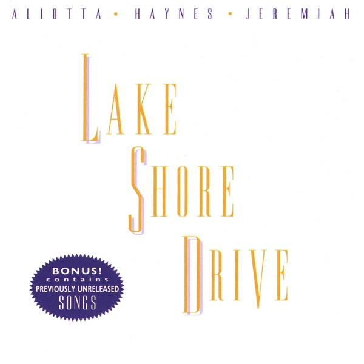

Day 100

Aliotta Haynes Jeremiah ◆ Lake Shore Drive ◆ Lake Shore Drive ◆ 1972
Spotify 上听到的（可能是《银河护卫队》的歌单？），讲的是芝加哥的一条公路，Lake Shore Drive。我看维基百科之前想象的是山里的湖边公路，开着敞篷车，湖里波光粼粼，风吹过头发。背景的钢琴给人一种并不急迫的、轻盈的速度感，有些像翻转的 Der Erlkönig。
专辑里的其他歌没有这么精彩的，就不提了。
我试着找了一下专辑封面上的字体，但没找到，有谁知道吗？
There’s a road I’d like to tell you about, lives in my home
town
Lake Shore Drive the road is called and it’ll take you up or
down
From rags on up to riches fifteen minutes you can fly
Pretty blue lights along the way, help you right on by
And the blue lights shining with a heavenly grace, help you
right on by
And there ain’t no road just like it
Anywhere I found
Running south on Lake Shore Drive heading into town
Just slippin’ on by on LSD, Friday night trouble bound
And it starts up north from Hollywood, water on the driving
side
Concrete mountains rearing up, throwing shadows just about five
Sometimes you can smell the green if your mind is feeling fine
There ain’t no finer place to be, than running Lake Shore Drive
And there’s no peace of mind, or place you see, than riding on
Lake Shore Drive
And there ain’t no road just like it
Anywhere I found
Running south on Lake Shore drive heading into town
Just slicking on by on LSD, Friday night trouble bound
And it’s Friday night and you’re looking clean
Too early to start the rounds
A ten minute ride from the Gold Coast back make sure you’re
pleasure bound
And it’s four o’clock in the morning and all of the people have
gone away
Just you and your mind and Lake Shore Drive, tomorrow is
another day
And the sunshine’s fine in the morning time, tomorrow is
another day
And there ain’t no road just like it
Anywhere I found
Running south on Lake Shore drive heading into town
Just snaking on by on LSD, Friday night trouble bound
Source: AZ Lyrics